By Scott Selfon, Audio Content Consultant, Content and Design Team, Xbox Advanced Technology Group
As discussed below, the sample effects image dsstdfx.bin should not be used in shipping games. This effects image consists of one of every single realtime effect supplied with the XDK. While this alone doesn't impact gameplay, the effects image also includes two reverb instances (one is used by DirectMusic titles for music reverb). Reverb is the one effect that uses an area of UMA (system RAM) for delay line processing, which means that a title using dsstdfx.bin is most likely wasting 380 KB of system memory on the second reverb effect they are not using. The DSP Builder authoring tool can be used to create a basic effects image specifically tailored to your game (often, just reverb and crosstalk cancellation), as discussed in this white paper.
One of the more unique features of the Xbox Media Communications Processor (MCP) is the presence of its fully programmable Global Processor (GP). The GP's flexibility means several things for game audio:
Those interested in this last point can contact content@xbox.com for sample effects and basic DSP compiler tools. In this paper, we discuss the supplied effects, tools you can use to author and audition DSP effects programs, and provide sample code for instrumenting your own game with the ability to dynamically alter the running DSP effects program.
Before we talk about effects programs, let's quickly review how they interact with the Xbox audio hardware. Remember that the Xbox MCP is composed of, among other things, three dedicated audio processing units. The Voice Processor (VP) is a fixed function wave-table synthesis processor. In addition to 3-D positioning and filtering, each voice can be independently mixed to up to 8 of 32 total mixbins. Those mixbins can then be processed by the aforementioned programmable Global Processor. In general practice, twenty of the mixbins are used for custom mixes (DSMIXBIN_FXSEND_0 through DSMIXBIN_FXSEND_19), each of which can have effects independently applied to it. The output of these processed Global Processor mixbins can either be sent to the main mix (which is then real-time encoded in the Encode Processor before being output), or used as the source data for a voice back in the Voice Processor. This last option lets you apply an additional filter as well as 3-D positioning to a sound that has had effects applied to it.
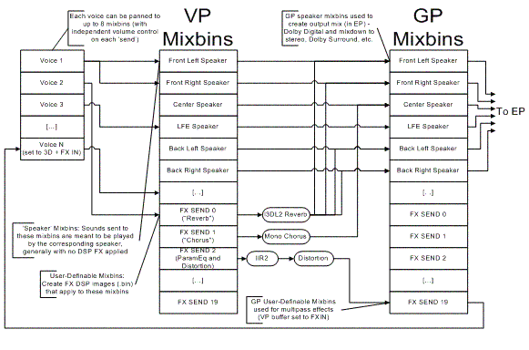
Illustration A sample audio configuration. A DSP image file comprises everything between the VP Mixbins and the GP Mixbins (in this case, several DSP effects making use of FX SEND 0–2). Voice 1 is a stereo sound (played to the front left and right speakers, with no effects applied). Voice 2 is routed to FX SEND 0, which has a reverb that sends it out to both the front and rear speakers (mixed with any voices that were sent directly to the VP Speaker Mixbins). Voice 3 is a "rumble track," panned solely to the LFE channel. Other effects paths (which don't currently have sounds panned to them) include FX SEND 1, which has a chorus applied to it before it is sent to the center speaker, and FX SEND 2, which applies an IIR2 (band of parametric EQ) and distortion, before being sent to FX SEND 19. This last path is used as a multipass effect, with the sound routed back to a VP voice, possibly for further filtering and 3D positioning.
The path the audio takes between the VP input mixbins and the GP output mixbins is what comprises a DSP image (a .bin file). A DSP image can apply one or more effects in chains, split and mix sounds between various mixbins, and in some cases, generate its own sounds to mix with (or replace) those played by the voice processor. These programs run on the GP itself, so they generally do not take any CPU. As we'll soon see, some effects may need system memory for things like delay lines and reverberation.
The Xbox Development Kit comes with several fairly standard effects programs, including a high quality I3DL2 reverberation program. Just to clarify, I define an effects program as a .scr file that is the low level "scrambled" binary program for a specific effect. A DSP image is a full binary image (.bin) that is loaded into the Global Processor, and may contain one or more effects chained together in specific orders.
I3DL2 reverberation is a high-quality environmental reverberation effect, based on the IASIG specification. We provide the option to use a 24-kHz or 48-kHz version of the reverb, which determines the balance between the quality of the "wet" signal and the memory footprint occupied by the reverb. For general use, the 24-kHz version is sufficient, and with default delay length allocates roughly 380 KB of the UMA. For a higher quality reverb, the 48-kHz version uses 580 KB. Note that only the 24-kHz variety is supported as the default environmental reverberation (as used by the DirectSound and XACT listeners).
One benefit of I3DL2 reverb is that the specification provides for 24 presets, along with a number of modifiable effect parameters. You can use the presets (auditorium, cave, forest, and so on), build your own settings from scratch, or use a preset as a point of departure, modifying some or all of its parameters to obtain the reverb that's appropriate for your title. Reverb parameters can be adjusted programmatically (via IDirectSound8::SetI3DL2Listener or IXACTEngine::SetI3dl2Listener), or via XACT content (using Environmental Reverb events in a sound).
The I3DL2 reverb supports mono input (a second input line labeled 'Ignored' goes unused in the current implementation). Although in the sample effects program (dsstdfx.bin, discussed below), an I3DL2 reverb is used for 3-D-positioned voices, any sounds can be played onto the reverb, allowing for sounds to react to the room environment without needing to be 3D positioned. The I3DL2 reverb provides four-channel output, traditionally assigned to the four positional speakers: left, right, left surround, and right surround.
In its typical setup, an IIR2 filter can be used as a single band of parametric EQ. By altering its settings and chaining several instances together, you can obtain numerous effects, from multiple-band equalization to a low-pass filter to the distortion effect separately available below. Note that this effect is in addition to the per-voice parametric EQ filter available in the voice processor.
The 2×1 mixer is a way to merge multiple audio streams into a single input of an effect.
The 1×N splitter is a way to split the output of an effect to send to multiple output mixbins.
This basic distortion effect exposes several pre- and post-filter parameters as well as gain.
Echo can be used in many cases as a "cheap" reverb.
An interesting note on these effects is that their modulation, rather than being hard-coded as a simple waveform (triangle, square, and so on), is exposed as an input. This gives you a bit more flexibility in several ways. You can drive these effects using more complex waveforms (for instance, a voice), or dynamically change what kind of signal is modulating the input. If you do want to use basic waveforms and don't want to deal with writing a sine-wave generator, we do supply an LFO effect, described below.
This oscillator effect is unique among the effects in that it generates its own sounds (rather than modifying an input audio stream). It is generally meant to drive other effects (the "modulation" input for amplitude modulation, chorus, and flanger, as described above).
The rate converter and voice rate converter perform simple sample rate conversion by skipping or repeating samples. Note that these effects are separate from the ability to individually modify the sample rate ('pitch') of hardware voices. The voice rate converter uses a buffer size optimized for the Xbox High Level Voice engine (XHV), discussed further below.
The peak and amplitude real-time monitor effect can be used to monitor the peak volumes of up to six mixbins. The effect analyzes the last 32 samples to determine their average amplitude. It also keeps track of playback history for the peak value encountered. The latter lets you watch for digital clipping. While this effect is most useful in debugging your game's audio levels, it can also be used to analyze any submix of your audio to display "LED"-style volume in-game, for instance, from the dashboard of a car.
Note For monitoring the final 5.1 mix and stereo downmix generated in the Encode Processor, you can use IDirectSound8::GetOutputLevels. This is the interface the Audio Console Application uses to monitor volume levels.
The sample effects image delivered with the Xbox Development Kit (XDK) exposes several of the effects discussed above. It is strongly recommended that you author your own effects program to replace this one for your particular title. One thing to note about dsstdfx.bin is that it actually contains two different I3DL2 reverbs. One is used by 3D-positioned voices (and other voices that are manually panned to the I3DL2 mixbin), and the other can be used as a music reverberation (which generally has different characteristics than a room reverb). Microsoft® DirectMusic® actually uses this second reverb as a send destination, whose volume can be controlled using MIDI controller #91 (Reverb Depth).
The presence of two reverbs means that the default image does take a fairly significant scratch space in main memory, roughly 800 KB, which will often lead content creators to create their own effects program. However, as a starting point for auditioning the various effects, dsstdfx.bin does provide quite a few commonly used effects such as flange and chorus. DSP Builder comes with a sample file (dsstdfx.fx) that can be used to build dsstdfx.bin. The image looks similar to this:
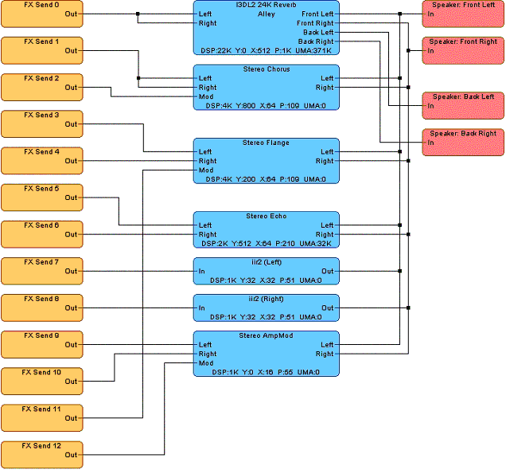
Illustration The sample effects file dsstdfx.fx that comes with DSP Builder.
Note first that the image above is not displaying the second reverb, nor are we seeing the crosstalk effect. These most typical options are available as automated 'Build Options', rather than having to hand draw them every time. We'll cover this in more detail in a few minutes. But for now, note that the presence of these effects is indicated by the bracketed material in DSP Builder's title bar:
Illustration The DSP Builder title bar indicates the presence of an additional reverb effect and a crosstalk effect.
Note that the sample effects image does not route any effects to the center or LFE channels. Again, this doesn't mean these channels will be silent; the programmer can still send any voice to these mixbins in addition to (or instead of) the mixbins used in the effects image. Remember that VP mixbins and GP mixbins are actually the same register space in the Xbox MCP, so by default, all VP mixbins are routed directly to their corresponding GP mixbins if they are not present in an effects image.
While dsstdfx.bin provides access to a few of the basic effects, it is provided as more of an example than an image meant to be appropriate for shipping titles. When you want to author your own effects images, you can use either the command-line xgpimage tool, or the graphically oriented DSP Builder. We'll primarily discuss the latter here, as it provides most of the functionality of the former in a more straightforward interface.
When you begin DSP Builder, you are presented with a blank effects image window. Right-click to add voice processor mixbins ("Input Mixbins"), effects, or global processor mixbins ("Output Mixbins"). Once you add effects and mixbins, it's just a matter of connecting them up by dragging between their pins (or multi-segment connections by clicking a pin and then every "bend" of the connection wire).
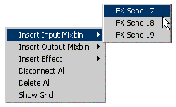
Illustration Adding an input mixbin to a DSP effect image (using the right-click menu).
As an example, let's say we want to be able to dynamically add distortion to some of our sounds (for instance, we're going to add some "break up" to our radio communications). We decide that any sounds sent to FX SEND 10 will have distortion applied, and the output will be sent to the center channel (as this is meant to be screen-anchored dialog). We create an effects image that looks something like this:
Illustration In this effects image, any content mixed to the FX SEND 10 mixbin is routed through a distortion effect, and then out the center speaker.
Once you're done authoring your effects program, you can select Generate and Save Image from the File menu to create a binary image file (.bin) that your developer can download to the Xbox, as well as a header file (.h) that your developer can use to manipulate effect parameters in real-time.
Rather than having to generate and save your image, giving it to your audio programmer, and waiting for a rebuild of the game with the new image, we provide an alternative for rapid auditioning of your content—the Xbox Audio Creation Tool. The instrumented versions of this library (xactengi.lib and xactengid.lib), which support realtime auditioning of other forms of content through the PC-based XACT authoring tool, also support real-time DSP image auditioning through DSP Builder. If you are not using XACT in your title, simply create an instrumented instance of it while you wish to audition DSP images, and then remove it prior to completing your title. XACT is also used by the Audio Console Application (audconsole.xbe), an Xbox audio audition tool provided on XDK recovery discs and the Xbox Remote Console Recovery Tool (available for download from Xbox Central).
The XACT library allows your title to accept updated effects images in real-time as transmitted from DSP Builder. So, while playing your title, you can swap out the current effects program, alter effect parameters, and so on.
The programmer only needs to do the following:
An Xbox application that uses XACT can now take advantage of DSP Builder's transmit option, accessible from both the Xbox menu as Transmit Image and the icon . When applied, the current effects program is downloaded to the Xbox from your PC.
Note DSP Server code has been incorporated into XACT as described above. DSP Server itself is no longer supported by DSP Builder, and XACT should be used for DSP effect auditioning instead.
Of course, the default settings for the effects probably aren't exactly what we're looking for, so we can tweak them by right-clicking on most effects and selecting Properties. From the window that appears, you can change any of the parameters the effect exposes.
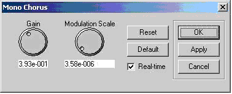
Illustration Property window for the chorus effect.
If an effect supports it, the Real-time checkbox indicates that the property window controls are "live," and changes are transmitted in real time to the Xbox. For the special case of the I3DL2 reverbs, the 24 presets are instead presented in the Configuration right-click menu option. Note that changes to the I3DL2 parameters (made from the I3DL2 Properties... Tools menu option) are transmitted to the Xbox in real time, and will be generated as a list that a programmer can use when calling the IDirectSound8::SetI3DL2Listener interface. A programmer can modify any settings visible on an effect's property page by taking advantage of the header file generated with the DSP effects image and using IDirectSound8::SetEffectData or, for effects that expose higher level properties such as reverb, distortion, and IIR2, XAudioSetEffectData.
For many effects configurations, one or more temporary mixbins will be used. The way the Xbox MCP behaves is that effects are applied to a mixbin, and the output of these effects are placed in other (or the same) mixbins. To be more specific, the output can either be added (mixed) to an existing mixbin, or it can replace the data in that mixbin. DSP Builder makes visualization somewhat easier by generally hiding temporary mixbins.
For instance, if you chain two effects together, DSP Builder will transparently set up your effects image to use a temporary mixbin to store the result of the first effect for use as the input to the second effect. But there are several cases in which you can manually set up temporary mixbins in a manner that could create digital feedback and therefore unexpected distortion in your audio. Specifically, using the same mixbin for both the input and output of an effect or effects chain will typically cause the original ("dry") audio to be mixed with the "processed" audio, which may not be intended.
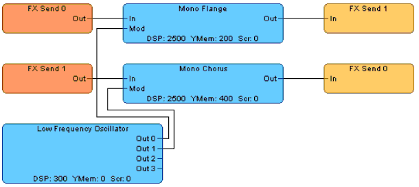
Illustration Two instances in which the default "mix" behavior might not be desired. In the first one, remember that the center speaker mixbin is actually the same register for both the VP mixbin and the GP mixbin. So the effect is applied and the output is mixed back into the source content, leading to merged playback of both the original and processed audio. The bottom example is more obvious—two mixbins are feeding effects into each other.
As we'll discuss in a moment, the crosstalk mixbins are actually used as temporary mixbins to merge 3-D voices routed to them with the four-channel I3DL2 environmental reverb applied to the voices. Here there is no danger of digital feedback because a straight path is applied from the crosstalk mixbins to the directional-speaker mixbins (see the illustration below). But in general, you'll want to be careful when using the same set of input and output mixbins so as to avoid the possibility of setting up a situation in which wet + dry effect merges (or feedback loops) may occur.
So an effect outputting to a speaker mixbin will generally merge with whatever data was sent directly to that speaker mixbin. This is the default behavior in DSP Builder. However, in some scenarios, you might want the output of an effect to instead overwrite any data previously routed to a specific mixbin. For instance, in the first illustration above, we might legitimately want to add some filtering to the center channel. Rather than effectively add the filtered wave to the original "dry" wave (as "merge" would do), we can set the output of the effect to Overwrite from its right-click menu. An effect that is overwriting the mixbin it is sending to will reflect this with a thick blue connector line.
When using overwrite functionality, certain ordering rules come into play. If one effect is overwriting a mixbin that a second effect is reading from, the second effect will read from the mixbin's original audio data first, and then overwrite that mixbin. Conversely, if several effects write out to a mixbin and one of them is set to overwrite, it will write to the mixbin before the other effects mix their output into the mixbin. DSP Builder attempts to keep ordering such that reads occur before overwrites and that overwrites occur before writes, you can manage the ordering yourself via Tools, and then Custom Effect Ordering (an option will be presented each time you build, allowing you to change the order of effects if you wish).
In general, 3D-positioned voices tend to have an environmental reverb applied to them, as well as crosstalk cancellation (if the audio is going to be played on a system with more than two channels). By default, 3-D voices are routed to the I3DL2 and XTALK (crosstalk) mixbins. The standard audio routing for such voices looks like this:
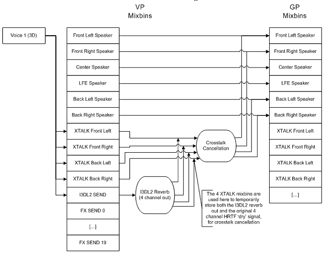
Illustration The default path for 3D voices, which are routed to five mixbins. Audio sent to the I3DL2 mixbin typically has a reverb applied to it, which creates a four-channel mix. This audio is then mixed back with the "dry" four-channel HRTF 3D-positioned sound for crosstalk cancellation (if applicable), and then placed in the actual directional-speaker output mixbins (left, right, left surround, and right surround).
As a shortcut to authoring such common scenarios, DSP Builder provides several Build Options, available from the Tools menu. Note that these options will not be displayed in the actual effects editing window, but are applied as the final image is being generated. The diagrams below reflect how these settings could be manually applied by the content creator.
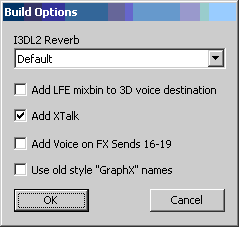
Illustration The Build Options dialog box.
The I3DL2 Reverb drop-down list lets you quickly set up the reverb used by the I3DL2 mixbin. By default, 3-D voices are mixed to this mixbin (as well as the crosstalk mixbins, discussed more below). Specifically, selecting a reverb (besides "<None>") from the dialog is equivalent to this:
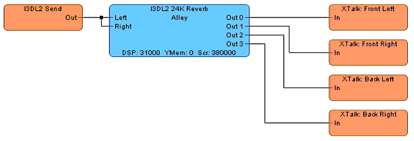
Illustration Using the I3DL2 reverb from the Build Options menu sets up a reverb that you could create manually like this.
Note that, because this will be the default listener reverb, DSP Builder currently always selects the 24-kHz variety of the reverb effect using this build option; the 48-kHz reverb is not supported for the default listener.
Also notice that the reverb is outputting to the four crosstalk mixbins. These are actually used as temporary mixbins in this case. Remember that, by default, all 3-D-positioned voices are actually sent to both the I3DL2 mixbin for reverberation processing and the four crosstalk mixbins. So the output of the I3DL2 reverb is actually getting mixed with the four crosstalk input mixbins. The mixed audio is then typically passed through a crosstalk cancellation effect (the effect is disabled when headphones are in use and the programmer has called IDirectSound8::EnableHeadphones). This brings us to the "Add XTalk" option, which you will generally want to leave in your image (unless you're not using HRTF 3D voice processing). This option applies the following path to your image:
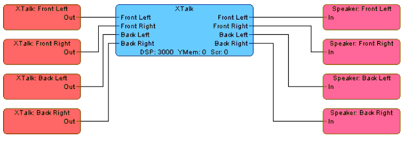
Illustration Using the Add XTalk option from the Build Options menu sends the crosstalk mixbins through a crosstalk cancellation effect, and then out to the four directional speakers.
Effects routed to the speaker output ("GP") mixbins are typically mixed with voices that were directly sent to the speaker input ("VP") mixbins, so 3D voices and 2D (manually panned) voices will all be heard together at output (unless you selected overwrite for the outputs of the effect).
Remember that DirectSound 3D voices by default are not sent to the center or LFE channels. (Sounds played by XACT onto a 3D sound source do use both of these channels.) If you wish, you can also instruct DSP Builder to mix 3-D voices to the LFE channel using the "Add LFE mixbin to 3D voice destination" option. This provides the equivalent shortcut to the following DSP Builder setup:
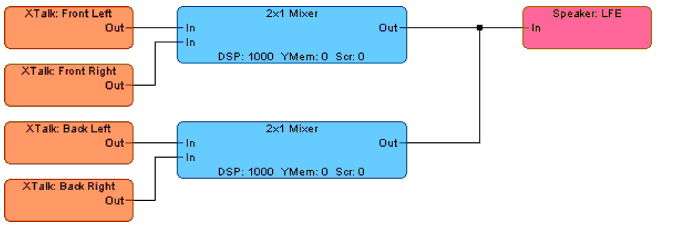
Illustration Using the Add LFE mixbin to 3D voice destination option from the Build Options menu mixes the four crosstalk mixbins to the LFE channel for output.
Similarly, you could manually set up an image that mixes some aspects of sounds into the center channel. But it is generally preferable to control this from the voice routing side rather than hard coding it into the effects image itself. You can either use the five-channel HRTF panning (XACT default, and also available in DirectSound) or reserve the center channel for dialog, UI sounds, and other non-positioned, screen-anchored sound elements.
The Add Voice on FX Sends 16-19 option provides a shortcut for incorporating voice into your effects image, specifically for use with the Xbox High Level Voice (XHV) library. This option will dedicate FX Sends 16 through 19 to headsets plugged into the four controller ports. Any sounds you wish to be played through player 2's headset can just be routed to FX Send 17, for instance. Do note the presence of the Voice Rate Converter effects; headsets play back audio content at significantly reduced fidelity compared to the main speaker outputs (8 kHz versus 48 kHz).
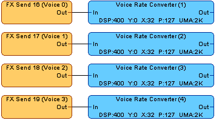
Illustration Using the "Add Voice on FX Sends 16-19" option from the Build Options dedicates and downsamples these four mixbins for per-player headsets to read from.
When instantiating the XHV engine (XHVEngineCreate), make sure you specify the effect index of the first Voice Rate Converter effect (dwEffectsStartIndex in the PXHV_RUNTIME_PARAMS structure), which will be listed in the generated DSP effects header file (.h), typically named GraphVoice_Voice_0.
At this point, you might be wondering how to manipulate the volume of your effects sends. A programmer can simply call IDirectSoundBuffer8::SetMixBinVolumes, or in XACT, IXACTSoundSource::SetMixBinVolumes, to alter the volume a voice sends to its various mixbins. More interesting from the sound designer's point of view is the ability to do this within content. XACT provides several methods for adjusting mixbin send levels.
First, these levels can be adjusted within a sound by using a mixbin event. The content creator specifies the particular mixbins that a sound will be played on, along with the corresponding volume levels. Note that for general use, sounds that use mixbin events should be played onto the default sound source.
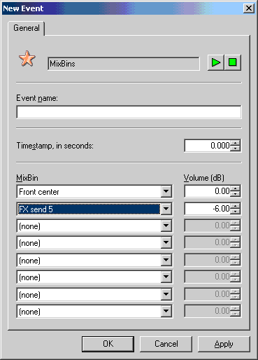
Illustration A mixbin event that routes a sound at full volume to the front center channel and at reduced volume to a custom effects send mixbin (FX send 5).
In addition, all sounds that are flagged for 3D playback (and are played onto a 3D sound source) have sliders for I3DL2 and LFE send levels. These adjust the volumes that the sound will send to those two mixbins.
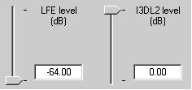
Illustration Adjustable send levels for LFE and I3DL2 reverb (set in the 3D properties for a sound).
With DirectMusic, MIDI controllers can be used to manage send levels that an audiopath sends to various mixbins.
As mentioned above, DirectMusic uses MIDI continuous controller #91 (Reverb Depth) to drive the volume sent to FX SEND 0, if the content is played on a "Standard Stereo & Reverb" audiopath. Similarly, MIDI continuous controller #93 (Chorus Send) is used to drive the volume sent to FX SEND 1 if the content is playing on a Standard Stereo & Reverb audiopath. Both of these controllers can be independently set per performance channel. So, for instance, an electric guitar part can be set to a full chorus, while a prerendered stereo ambience can have a subtle reverb and no chorus.
The DirectMusic mixbin audiopaths provide more complete control for mixbin send levels, using MIDI continuous controllers #102–109 to drive the send level to each of the up to eight mixbins the content might be playing on. These mixbins do not support MIDI controllers 10 (stereo pan), 91, or 93. More information on these controllers is provided in the white paper DirectMusic and Multichannel Audio.
DSP effects programs give an excellent opportunity for real-time rendered sound effects and manipulation of content. This added flexibility allows for the same amount of pre-rendered audio data to be used in multiple ways.
For instance, an elk could be pitch-shifted and flanged to become many different dinosaur noises. Or cockpit chatter could be "radioized" with dynamically added static and distortion. No longer does the content creator need to deliver hundreds of gunshots based on the size and geometry of the room. All of this control provides an opportunity for more dynamic and compelling audio implementations without significant overhead in memory, CPU, or disk space. We hope you'll take advantage of it!
For more information about topics presented here, please consult other chapters of the Xbox Audio Best Practices Guide, the Xbox Development Kit documentation, or the white papers on Audio Designer's Corner, or send an e-mail message to content@xbox.com.
1 One of the thirty-two mixbins is specifically reserved for chaining (routing of one or more voices to a MIX IN voice), so it is not visible in DSP Builder or accessible for manual panning.
2 The Voice Processor and Global Processor mixbins are actually the same space on the audio chip. This means that if an effects program outputs to the same mixbin it input from, you could incur digital feedback. This is also the reason that the speaker mixbins are generally used solely as outputs for effects, not inputs.
3 If you wish to override DSP Builder's settings, it generates a .ini file when you select Generate and Save Image. This file can then be edited in any text editor and used with the command line XGPImage tool to generate .bin and .h files that expose settings not available in DSP Builder.
Updated Wednesday, September 30, 2002